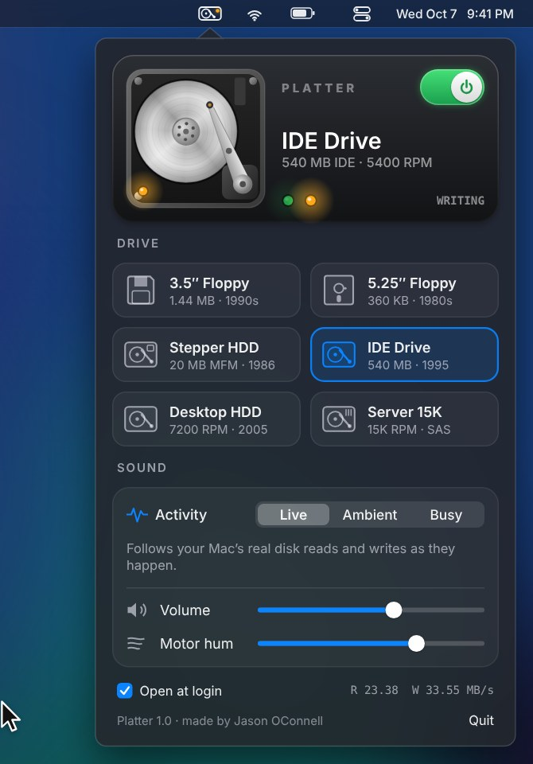

3.5″ Floppy
1.44 MB · 1990sStepper buzz hunting for track zero, then a tick every time it moves a track.
300RPM
A menu bar app for macOS
Platter puts a mechanical hard drive in your menu bar. Real seeks, real spin up, a real activity light, all driven by what your Mac is actually reading and writing.
Free and open source · macOS 13 or later · Apple Silicon and Intel · 1.1 MB
by Jason O’Connell

Fifty three seconds. Turn your sound on.
Every drive is synthesized live, from the spindle motor and bearings to the actuator arm hitting its stops. Nothing is a recording, so no two seeks sound the same.
Stepper buzz hunting for track zero, then a tick every time it moves a track.
Head load solenoid, belt drive hum, and the head banging its stop on every recalibrate.
Zzzzt, chunk. A stepper motor that walks the heads one track at a time.
The grind you heard every time a program loaded. Ball bearings, loud seeks, the occasional recalibration.
Crisp little ticks and a soft whine. Peak LAN party.
A datacenter aisle at arm’s length. Fast, dense seeks over a high spindle whine.
Platter reads the same disk counters Activity Monitor shows and turns every burst into seeks, settles and rotational waits, the way a real drive would service them.
Follows your Mac’s real reads and writes. Copy a big folder and it grinds. Leave it alone and it mostly hums.
An idle computer from 1997: the odd read, a write flush now and then.
A heavy workload on loop, like installing software from a stack of disks.
Platter is free and not sold through the App Store, so macOS asks you to confirm it the first time.
Download and unzip Platter-1.0.zip.
Drag Platter into Applications.
Open it once. If macOS says it can’t verify the developer, open System Settings, go to Privacy & Security, scroll down and click Open Anyway.
Or skip that step by pasting this into Terminal:
xattr -dr com.apple.quarantine /Applications/Platter.appClick the little drive in your menu bar and flip the switch. Right click the icon any time to turn it on or off.
Platter is free and open source. The whole sound engine is one small C file, so adding a drive is mostly tuning numbers until it sounds right. Bring your ears.